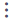
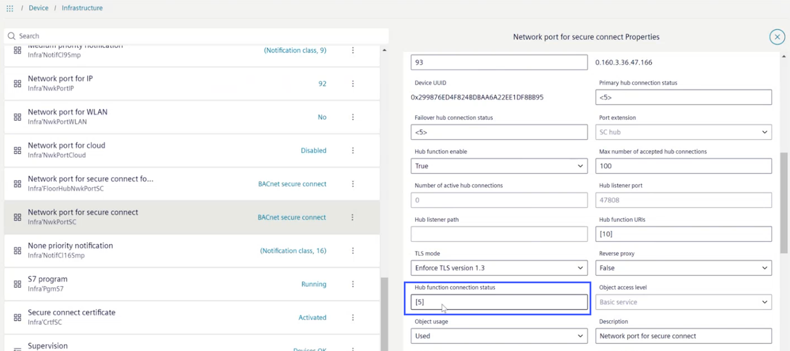
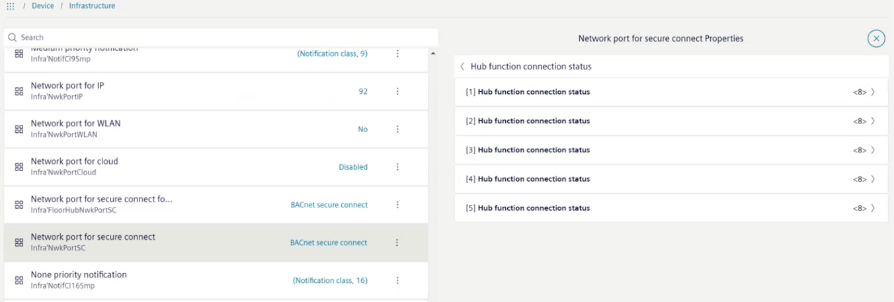
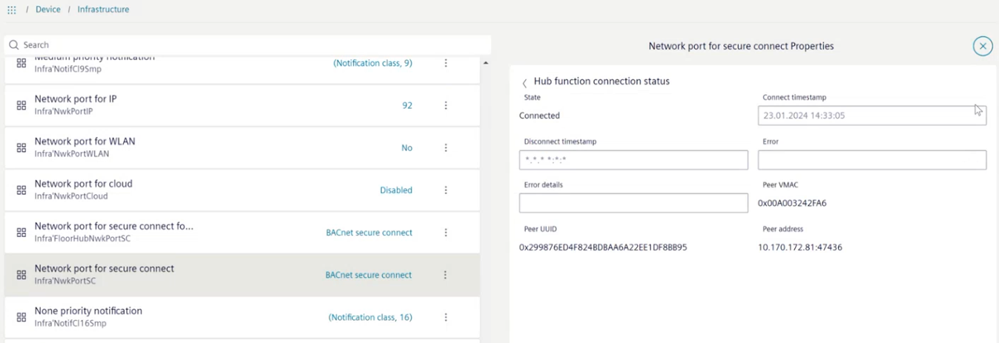
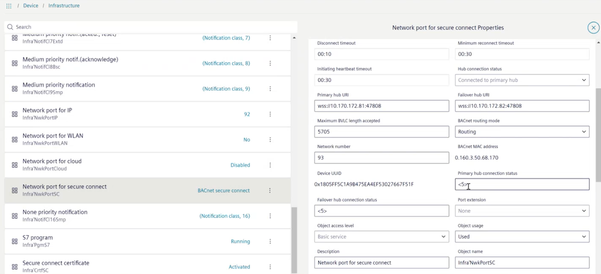
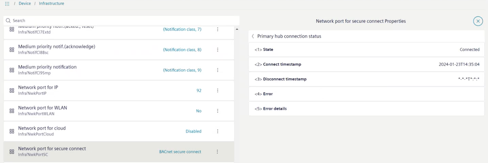

检查集线器连接
楼层枢纽充当其节点的枢纽以及建筑枢纽的节点。因此必须在两个方向上检查连接状态。
Checking connection from the floor hub to the nodes
- The user is logged into a hub.
- Go to Object view > Device > Infrastructure.
- Select Network port for secure connect and then

. - The Network port for secure connect properties work area opens.

- Select the Hub function connection status field.
Note: The number refers to the number of nodes that belong to this hub. - The Hub function connection status work area opens.
Note: The number refers to the number of entries below this node.
- Select one of the Hub function connection status row.
Note: Unfortunately, there is no condition overview at this level. Therefore, all entries must be opened individually to find the error. With up to 100 nodes this can take some time. - The extended Hub function connection status work area opens.

- Analyze the information displayed for further troubleshooting.
Checking connection from a floor hub to a building hub
在这种情况下，楼层枢纽充当连接到建筑枢纽的节点。
- Select Network port for secure connect and then .
- The Network port for secure connect properties work area opens.

- In the field Hub connection status, check the connection status.
- If
Connected to primary hubis displayed, everything is fine and does not require further diagnosis. If a different message is displayed, more information can be displayed in the fields Primary hub connection status and Failover hub connection status. The number <5> refers to the number of individual pieces of information available for this field.
Error analysis
- The Hub connection status does not show the
Connected to primary hubinformation.
Error list
- Select either Primary hub connection status or Failover hub connection status field.
- The Primary hub connection status work area opens.

- Analyze the information displayed for further troubleshooting.

中的时间条目Connect timestamp行显示最后一次尝试连接到主集线器的时间。